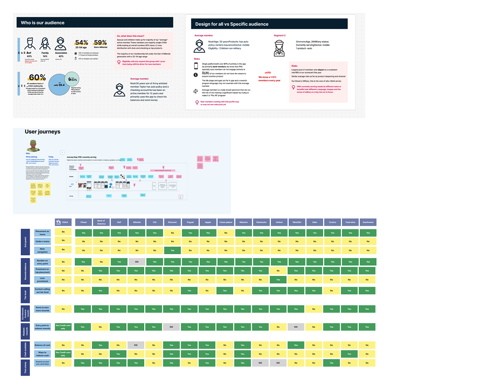

Loytalty Rewards progam-Financial company
Loytalty Rewards progam-Financial company
Overview
Loyalty Rewards Program — Redesigning Member Engagement UX Strategy & End-to-End Product Design for Financial ServicesA strategic loyalty program for USAA members designed to • deepen long-term engagement • deliver personalized value • and drive measurable member satisfaction and retention.
Role
As the lead designer, I took charge of translating the strategic objectives of our business partners into a compelling user experience on a native app. I collaborated closely with stakeholders to understand their goals and logistical constraints, ultimately creating a visual representation that would convey the essence of the loyalty program to our members.
Problem to solve
TUSAA wanted to introduce its first comprehensive loyalty rewards program to better express gratitude to members and strengthen relational value beyond banking products. The challenge was twofold:
- Create a member experience that feels genuinely rewarding and personalized
This required balancing emotionally compelling UX with quantifiable business outcomes.
My approach
- Market & Competitive Analysis: I audited leading loyalty programs across financial and non-financial sectors to identify proven engagement strategies and opportunities to differentiate. Key insights drove prioritization of reward categories and potential personalization tactics.
- Business Alignment Workshops: I collaborated with business partners to align on goals and requirements, ensuring that the program would not only meet member needs but also drive business outcomes. 
- Research & Concept Testing: Rather than assume member preferences, I conducted quantitative member testing on early concept sketches to validate appeal and uncover unmet needs — giving us data that informed next iterations.
- Concept Development: I sketched out several concepts for the program, incorporating insights from my research. Each concept was designed to address different facets of member engagement and business objectives.
Impact and Results
Secured Executive Funding: My design artifacts and concept narrative directly contributed to gaining multi-year funding from senior leadership.
Expected Outcomes
- Program launch as USAA’s first loyalty rewards initiative
- Designed to drive deeper engagement with member services
- Expected to increase retention and satisfaction metrics
Key Learnings (Senior Reflection)
- Balancing strategic goals with user motivation is a core UX leadership skill—especially in regulated spaces like financial services.
- Solo leadership strengthened prioritization and communication skills by driving cross-functional alignment without a dedicated design team.
- Clear documentation of decisions and the “why” behind them increases stakeholder trust.
This work is owned and all the rights of work is reserved by USAA